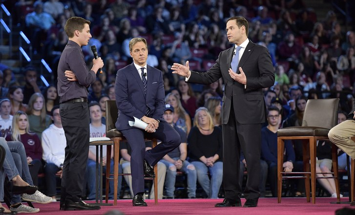
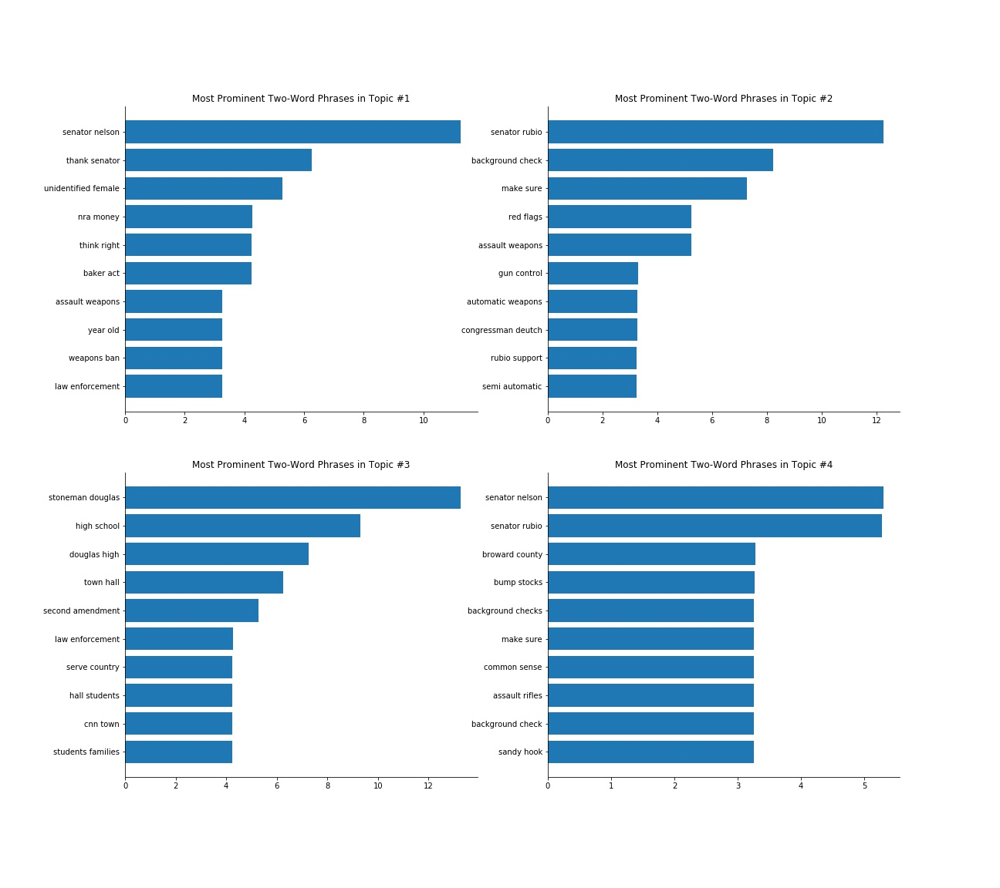

In late February, following a shooting at a High School in Parkland, Florida, some of the survivors, their parents, and teachers were invited to a televised town hall to ask uncensored questions about and discuss gun violence and related topic with Senators Marco Rubio and Bill Nelson, House of Rep. Member Ted Deutch, Broward County Sheriff Scott Israel and National Rifle Association spokeswoman Dana Loesch, among others. The event was moderated by Jake Tapper of CNN.
The CNN town hall garnered significant public attention not only for the tragic nature of the shooting at the Stoneman Douglas High School, which took the lives of 17 students and teachers, but also because of the political, legislative, and law-enforcement issues that are inextricably tied with gun violence in the US. In a series of appearances unprecedented in a disturbingly long history of frequent shooting incidents, some among the students have spoken extensively and eloquently on the need for greater gun-control, which spurred further attention and interest in the already prominent and highly polarized debate regarding gun violence in the US. In the weeks after the shooting and preceding the CNN town hall, this has been one of the most discussed political topics in the public sphere as reflected on social and traditional media.
The event and was the first opportunity for some the loudest and most authentic critics of [what are perceived by many as] lax gun laws to discuss the issue with policymakers, law-enforcement, as well as a representative of the National Rifle Association. As such, the CNN town hall has itself been the subject of great public attention; an obvious source to look to for the public’s authentic, uncensored reactions was Twitter.
With the aim of enabling a visual exploration of three aspects of the public reaction to the TV event as well as the content of the event itself, we developed three corresponding interactive visualization tools. These three aspects of the public reaction to the event as reflected on Twitter and the town hall itself are:
The volume of reactions to the various personalities involved in or conspicuously absent from the CNN town hall, and its evolution through the duration of the event
The below interactive tool renders dots on a map of the US to represent all the tweets posted from a specific geographic location (latitude-longitude) and minute since the start of the event. The desired minute since the beginning of the event can be selected by the slider - ranging from 0 (9 pm local time) to 120 (11 pm). Finally, upon clicking on an area within any of the US states, the application will display below a collection of words most frequently mentioned in tweets by users from the selected state up to the specified minute during the town hall.
It is advisable to be wary of inferring specific propositions about the geographical character of a phenomenon based on observations plotted on a map, which may reflect differences in population density rather than an underlying pattern of interest.
However, because the tool allows for comparisons over time via the interactive slider, we can obtain certain findings or tentative hypotheses about the relative volume of tweets within specific areas/states over time, as the town hall progressed, as well as across areas/states, if one keeps in mind the quite-well-known general facts about population density.
Thus, for instance, one can most easily notice that the volume of tweets increases with time within almost all non-coastal areas; more specifically, for large areas in the Southwest and the (western parts of the) Midwest, the relative within-area volume of the tweets increases markedly as the town hall event evolves. One can explore the within-trend with more granularity by focusing on a specific state over time.
Furthermore, comparing the volume of tweets across areas or states in a responsible and informative manner is possible when one keeps in mind the population density of various states and urban areas [should we attach a map?]: people in certain parts of New Mexico, Arizona, Montana, and on the border between North Dakota and Montana appear to be posting on Twitter about the town hall more than many in similarly sparsely populated areas. This sort of finding may lead to further geographic hypotheses about gun ownership rates or political leanings and inclinations to tweet about the event: within Texas, Austin, a more Democrat-leaning city, seems to be less active than Dallas, though they are of similar sizes.
Finally, by utilizing the feature that yields the most frequently tweeted words in a state up to a point during the town hall event, one can explore peculiarities of commentators in a state. An interesting example is the prominent appearance of (Jake) Tapper in North Dakota, which gives another tentative hypothesis about a plausible link to more widespread “fake news cnn” attitudes in certain states such as North Dakota. Noteworthy occurrences across the states are those of the seemingly omnipresent Senator Marco Rubio and the #STUDNETSSTANDUP hashtag, among others.
Looking at states with very high estimated gun ownership rates, such as Montana, Texas, or Arkansas, one can notice that NRA related terms, including the representative Dana Loesch upon her entrance around the 70th minute, are quite prominent, which may indicate either that even the more pro-gun users don’t shy away from addressing the topics despite the negative coverage in the town hall, or that even in more conservative states, the users that decide to tweet about the event are more likely to support stronger gun-control.
The latter seems to be the more likely explanation, considering the fact that, using the first tool to inspect the volume of tweets about NRA rep. Dana Loesch over time, even the most positive tweets that appear are very negative, across the US. These findings together, may support two plausible hypotheses: (i) that the average viewer of the CNN town hall may be slightly more likely to hold liberal political attitudes, which is in line with what we know about the viewership of CNN; or (ii) that people are in general more likely to tweet when they feel strongly about an issue, and this happens to be quite negative on the particular issues discussed in the town hall.
The major topics of discussion extracted from the transcript of the CNN town hall event, their relative distance (between their estimated distributions), and the most (uniquely) prominent two-word phrases within each topic.
